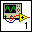
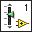

Icons are graphical representations of VIs or project libraries.
Every VI displays an icon, shown as follows, in the upper right corner of the front panel and block diagram windows.

The default VI icon contains a number that indicates how many new VIs, up to nine VIs, you have opened since launching LabVIEW. To disable this numbering, select Tools�Options�Front Panel and remove the checkmark from the Use numbers in icons of new VIs (1 through 9) checkbox.
An icon can contain text or images. If you use a VI as a subVI, the icon identifies the subVI on the block diagram of the VI. If you add the VI to a palette, the VI icon also appears on the Functions palette.
Use the Icon Editor dialog box to edit a VI icon. Double-click the icon in the upper right corner of the front panel or block diagram window to display the Icon Editor dialog box.
You can use banners to identify related VIs. National Instruments recommends creating and saving a banner as a template. You then can use this template for a related VI icon and modify the body of the VI icon to provide information about the specific VI.
Icons for custom controls are similar to those of VIs. Every custom control displays an icon, shown as follows, in the upper right corner of the Control Editor window.

Double-click the icon in the upper right corner of the Control Editor window to display the Icon Editor dialog box, which you can use to edit the icon.
Icons for project libraries are different from those of VIs or custom controls. LabVIEW applies a library icon to the icon of all objects in the library. National Instruments recommends creating only a banner for the library icon. For example, you can create the following banner as a project library icon.
The icon for each object in the library then includes the banner, and you can modify the body of the icon to provide information about the specific object.
Use the General Settings page of the Project Library Properties dialog box to view or edit the icon for the corresponding project library.
Icons for statecharts, classes, and XControls are similar to those of project libraries. Use the General Settings page of the Project Library Properties dialog box, Class Properties dialog box, or XControl Properties dialog box to view or edit the icon for the corresponding statechart, class, or XControl, respectively.